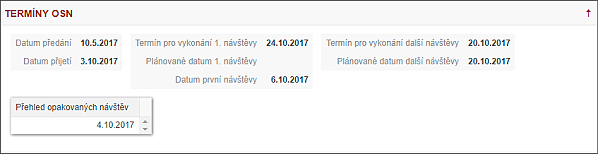

Podzáložka - TERMÍNY OSN

Podzáložka obsahuje všechny termíny plánovaných i uskutečněných schůzek. Jsou zde i definice maximálních termínů, do kdy je třeba návštěvu uskutečnit.
Termíny jsou vždy rozděleny dle následujících pravidel:
- Datum předání (DPRED) - Datum předání spisu z centrály inspektorovi do aplikace TRACE.
- Datum maximálního termínu přijetí/převzetí (DPRIJMAX) - pevně stanovené datum přijetí spisu Inspektorem ze stavu Nový do stavu Osobní návštěvy.
- Datum přijetí (DPRIJ) - Datum, kdy IP převzal spis do své správy. Toto datum se bere jako počátek OSN (pro reporty).
- Maximální datum pro vykonání 1.OSN (D1MAX) - Datum maximálního termínu uskutečnění 1. OSN (využití pro Urgence i pro řazení). Tento datum není stanoven editovatelným parametrem pro všechny spisy jednotně. Každý spis v sobě již z centrály nese atribut, který obsahuje lhůtu pro vykonání první OSN.
- Datum plánované 1.OSN (D1PLAN) - Při plánování 1. osobní návštěvy je nutné plánovat schůzku v rozmezí od data přijetí do data maximálního. Ve výjimečných případech lze plánovat i přes maximální datum D1MAX, ale inspektor při plánování takového termínu bude na tuto skutečnost upozorněn a po potvrzení bude o tomto kroku informován i Supervizor formou Upozornění.
- Datum první OSN (D1OSN) - Datum vykonání první osobní schůzky je zapsán vždy až po vykonání a zapsání 1. OSN pomocí procesu "Zápis z OSN". Dle procesu se plánuje hned další OSN (DNMAX), případně se spis přesouvá na některou z dalších záložek bez vyplnění dalšího plánovaného datumu.
- Datum maximálního termínu uskutečnění každé další OSN (DNMAX) - N je počet druhé až x-té OSN, které se uskuteční, dokud nebude spis uzavřen. Tento datum není stanoven editovatelným parametrem pro všechny spisy jednotně. Každý spisy v sobě již z centrály nese atribut, který obsahuje lhůtu pro vykonání opakované OSN.
- Datum další plánované OSN (DNPLAN) - Při plánování další osobní návštěvy je nutné plánovat schůzku v rozmezí od data přijetí do data maximálního. Ve výjimečných případech lze plánovat i přes maximální datum D1MAX, ale inspektor při plánování takového termínu bude na tuto skutečnost upozorněn a po potvrzení bude o tomto kroku informován i Supervizor formou Upozornění.
- Datum druhé a další opakované OSN (DNOSN) - jedná se o seznam všech opakovaných osobních návštěv u dlužníka, tedy seznam druhé a další opakované OSN.